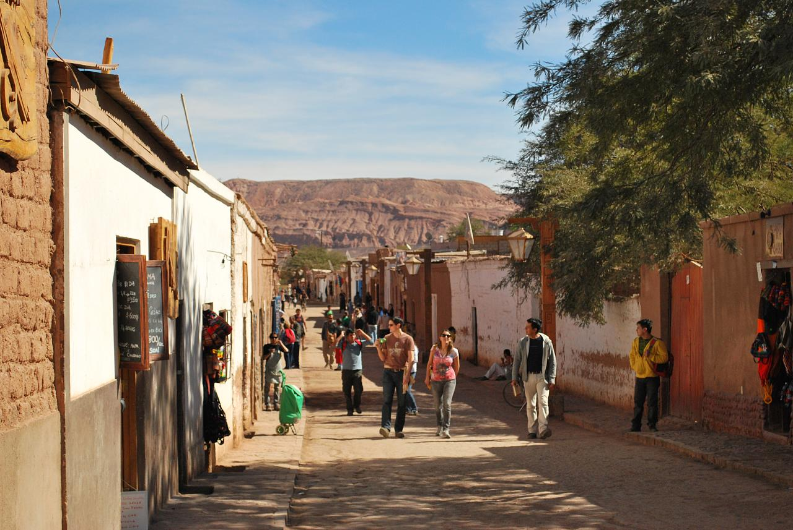
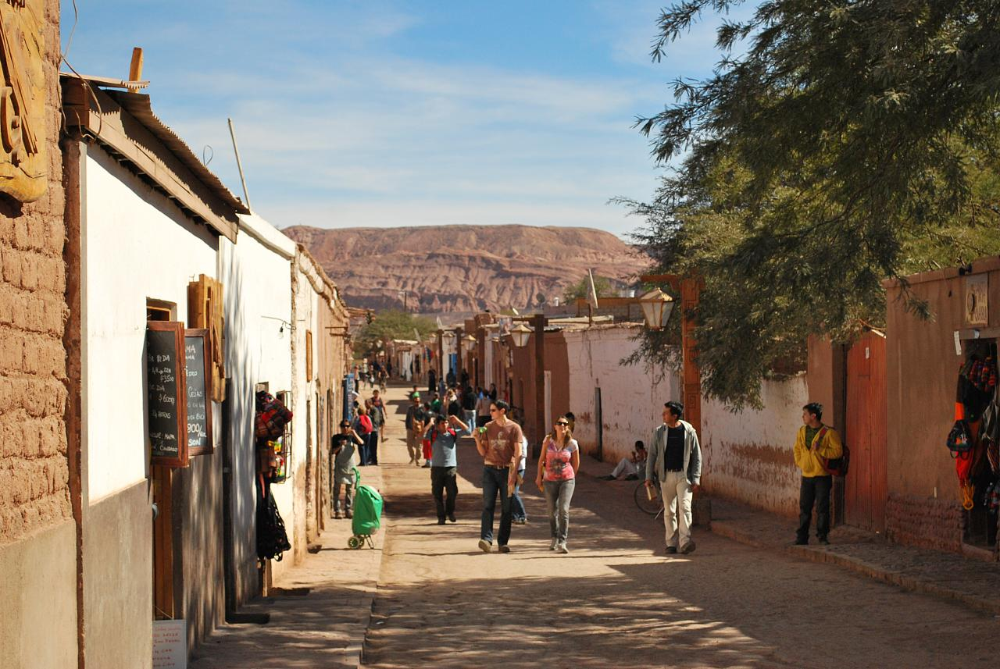

DIA 1: Chiu Chiu
Parada obligada de turistas que siguen el “camino del Inca”, es un oasis de sombra en medio del desierto. Habitado por comunidades atacameñas, su ritmo pausado es solo interrumpido por fiestas religiosas que, dependiendo del patrono, incluyen challa, harina o chicha de algarrobo.
DIA 2: Geiser del Tatio
Levántate de madrugada para disfrutar del espectáculo protagonizado por los cráteres de El Tatio apenas sale el sol. Ubicados a 4.200 metros de altura, sus fumarolas crean impactantes columnas blancas de vapor que logran su mayor esplendor entre las 06:00 y 07:00 am.
Aprovecha tu paseo matutino y observa cómo salen de sus escondites vizcachas, vicuñas, ñandúes y otras aves, que buscan su desayuno entre llaretas y cactus gigante. ¿Cansado? Termina el día en las sanadoras aguas termales que ofrece el destino.
DIA 3: Lagunas Altiplanicas
Aguas de azul intenso y orillas blancas que reciben gran variedad de aves, las lagunas de Miscanti y Miñiques son un regalo de la naturaleza. Ubicadas al interior de la Reserva Nacional Los Flamencos, a más de 4 mil metros de altura, contrastan mágicamente con los cerros nevados que las rodean.